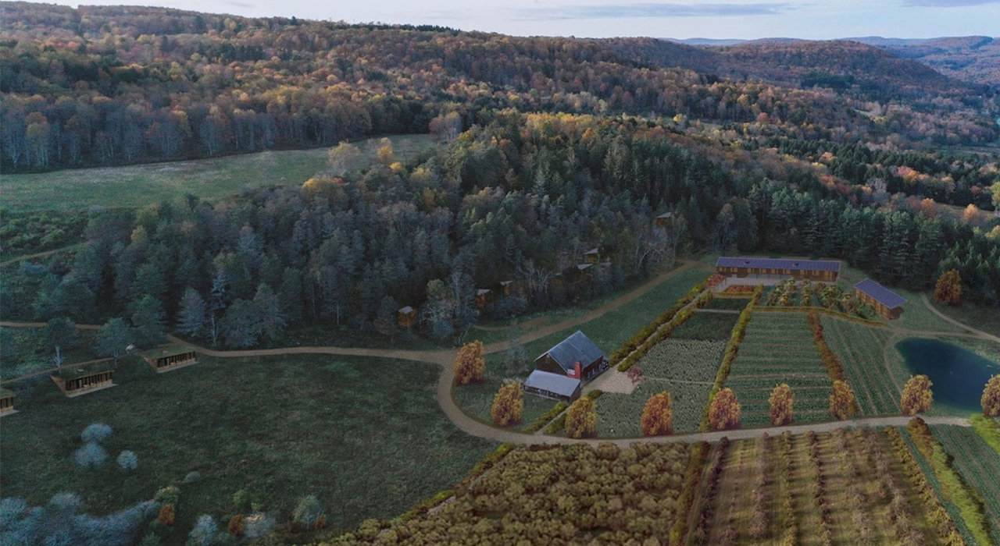

Our Story
A new American restaurant group with two tables in the Hudson Valley — a room in downtown Armonk and a gathering place at the farm in Livingston Manor.
Flybrook raises the bar in Hudson Valley hospitality — incredible ingredients, a seasonally distinguished dining experience, and a dynamic bar at the heart of Armonk, with a second table taking shape at the farm itself in the Catskills. We source from our own 117-acre regenerative organic farm in Livingston Manor and small family farms across the valley — a short, honest distance from field to table.


Executive Chef
A critically acclaimed chef based in New York City and the Hudson Valley, Roxanne is known for innovative, seasonal cooking that respects and incorporates regional traditions.
At Flybrook she leads a kitchen built around ingredients grown on our own land and across the valley — a calm, biophilic room where the food and the land do the talking.
The name
Armonck is what the Lenape called this land. Our restaurant sits in the heart of downtown Armonk, a few blocks from where that water still runs.
Livingston Manor, where our farm sits, is the storied home of American fly fishing. The brook, the hatch, the dry fly — our mark honors water, patience, and the land that feeds the kitchen.
Field and stream to fork